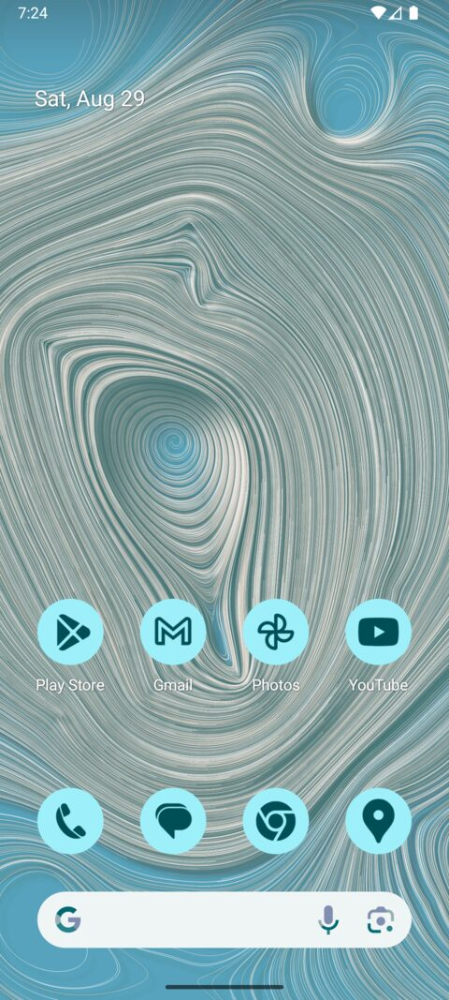
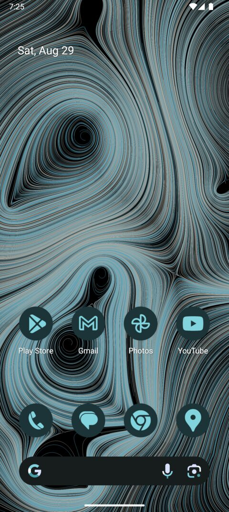
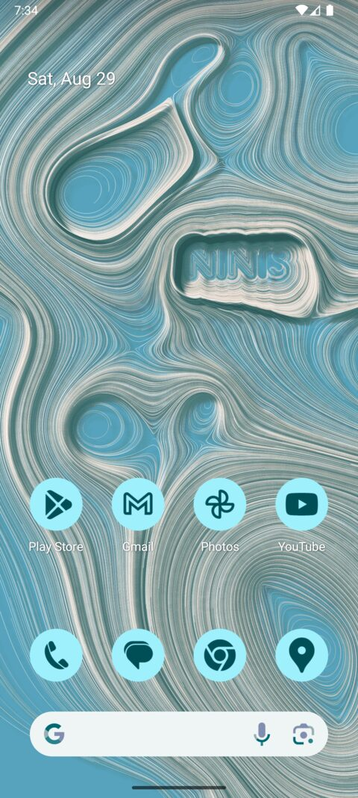
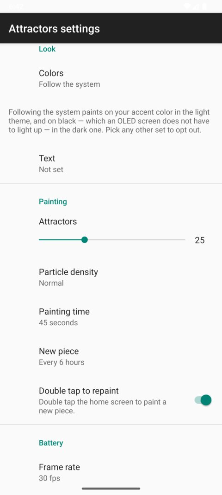

Eight years ago I wrote here about Attractors, the generative piece Anne and I made for our save the date: thousands of particles flowing through a field of attractors, each frame painted on top of the last until the trails add up to a picture. It has been running at attractors.steren.fr ever since.
We have had it as a printed frame in our living room, and I have had it as a static wallpaper on both my desktop and my phone. But those are all still images. The whole point of the piece is the motion: seeing the art gradually form as the particles flow.
I knew Android had live wallpapers, but they cannot run a WebView with JavaScript — so there was no way to simply point one at the page.
A piece painting itself, recorded off the device at twice speed, ending on the home screen paging so the parallax shows.


The light and dark themes. The icons are themed ones, tinted from the colors the wallpaper hands the system, so they and the piece behind them come from the same place.

Particles can be made to flow around a shape, which is how the letters appear. This one is set to NINIS, after the save the date.
How it's made
I have no idea. Claude wrote it — all of it, in Claude Code, from one prompt:
Implement https://github.com/steren/attractors as a native Android wallpaper.
About an hour later there was a working wallpaper — some 1,450 lines of Kotlin and the Gradle project around it — with no follow-up from me in between. The next thing I typed was initialize a git repo.
It tested itself as it went, which is the part that made this work at all: install the SDK, scaffold a project, create an emulator, boot it, build, install, then read the screen's view hierarchy, tap its way through the wallpaper picker, screenshot the result and look at it. It rebooted the emulator to check that a finished piece survived, and sampled the process CPU by PID to check that a finished piece really costs nothing.
That matters more than the Kotlin. The specification for this program is does it look right, and there is no way to satisfy it by writing code that compiles.
So rather than explain a codebase I did not write, here is what Claude has to say about how it works:
A piece is a bitmap that is never cleared: each frame moves the particles a little and strokes the segment each one just travelled on top of everything drawn before it, which is why the picture accumulates rather than plays. That half runs on the CPU — a few thousand particles and a few thousand hairline segments is bookkeeping, not the wide uniform work a GPU is for. The half that does go through the GPU is copying the finished bitmap onto the screen, through lockHardwareCanvas, which is what a frame mostly costs. The piece is painted a third wider than the screen and that copy is offset by however far the home screen is paged, so it slides behind the icons the way a photo does, repainting nothing.
Then it stops. After 45 seconds the render loop is torn down and the wallpaper costs no CPU at all until a new piece is due six hours later, which is where it spends nearly all of its life. Nothing is painted while it cannot be seen, a finished piece is kept on disk so that a reboot costs a file read rather than a repaint, and there is no alarm, job or wake lock anywhere — whether a new piece is due is worked out when the wallpaper becomes visible. In battery saver the frame interval stretches to 250ms, so only the frames get rarer: the piece still takes its 45 seconds to arrive, it is just watched less often.

All of it is adjustable, including the frame rate and how often a new piece is painted.
The colors follow the system by default. In the light theme the piece is painted on a color; in the dark theme on plain black, which an OLED screen does not have to light up at all. Picking one of the fixed palettes opts out of all of this.
Which color, though, is circular, because on Android 12 and later the accent is itself derived from your wallpaper. A wallpaper painted in the accent, and an accent computed from the wallpaper, is a snake eating its tail.
So the first thing worked out is which way the colors are flowing on this particular device. If you picked your system colors by hand, they are a fixed point and the wallpaper follows them, painting on your accent. If your system colors are set to come from the wallpaper, then the wallpaper has to lead instead: it paints in the palette of the original web version and hands those colors back to the system, so your phone's accent becomes the blue of the 2018 piece. What it never does is hand back colors it read from the accent to begin with. That is the loop, and the guard against it is one line.
The dark theme needed one more adjustment. Painting the near-white trails of the web palette straight onto black glares; it uses the palette's own blue and its cream brought down to meet it, which is recognisably the same piece and much easier to live behind.
Try it
An APK is attached to every release, or build it yourself with ./gradlew installDebug, then pick Attractors in the wallpaper picker. The original still runs at attractors.steren.fr.